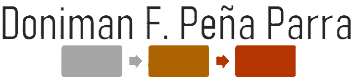

<!-- ========= HEADER: Dataport-Style mit Burger-Menü ========= -->
<header class="site-header page-topline">
  <!-- Logo links -->
  <a class="logo-link" href="index.html" aria-label="Startseite">
    
  </a>

  <!-- Burger-Schalter (mobil). ARIA: expanded + controls -->
  <button class="nav-toggle" aria-controls="mainnav" aria-expanded="false">
    <span class="nav-toggle-label">Menü</span>
    <!-- schlichtes Hamburger-SVG -->
    <svg class="icon" width="28" height="18" viewBox="0 0 28 18" aria-hidden="true">
      <rect x="0" y="0"  width="28" height="2" rx="1"></rect>
      <rect x="0" y="8"  width="28" height="2" rx="1"></rect>
      <rect x="0" y="16" width="28" height="2" rx="1"></rect>
    </svg>
  </button>

  <!-- Hauptnavigation -->
  <nav id="mainnav" class="mainnav" aria-label="Hauptnavigation" data-open="false">
    <ul class="nav-list">
      <!-- feiner linker Trenner an erstem Eintrag via CSS -->
      <li class="nav-item"><a class="nav-link" href="index.html">Start</a></li>
      <li class="nav-item"><a class="nav-link" href="uebermich_1.0.0.html">Über mich</a></li>
      <li class="nav-item"><a class="nav-link" href="projekte.html">Projekte & Leistungen</a></li>
      <li class="nav-item"><a class="nav-link" href="prozessmodellierung.html">Prozessmodellierung</a></li>
    </ul>
  </nav>
</header>

<style>
/* ======= Navigation – Dataport-Anmutung =======
   - Desktop: Logo links, Menü rechts, schmale vertikale Linie vor erstem Punkt
   - Hover/Unterstreichung wie Dataport
   - Mobil: "Menü" + Hamburger, off-canvas Dropdown
   ============================================= */

/* Kopfzeile – nutzt deine Farbvariablen (site.css) */
.site-header{
  display:flex; align-items:center; justify-content:space-between;
  gap:16px; padding:16px var(--padx,24px);
  background: var(--white);
  border-bottom:2px solid var(--separator,#eeeff1);
}
/* zusätzliche rote Top-Linie */
.page-topline{ border-top:4px solid var(--brand-accent,#9e292b); }

.logo{ height:60px; width:auto; }
.logo-link{ display:inline-flex; align-items:center; }

/* ---------- Desktop-Navigation ---------- */
.mainnav{ /* auf Desktop immer sichtbar */ }
.nav-list{
  display:flex; align-items:center; gap:32px; margin:0; padding:0; list-style:none;
}
/* feiner Trenner am linken Rand der Liste (wie Dataport) */
.nav-list .nav-item:first-child{ 
  padding-left:22px; position:relative;
}
.nav-list .nav-item:first-child::before{
  content:""; position:absolute; left:0; top:50%; transform:translateY(-50%);
  width:1px; height:18px; background:#cbd2d9; /* dezent grau-blau */
}

/* Links: graublau + animierte Unterstreichung; „+“ am Ende */
.nav-link{
  color: var(--headline,#3a424b); font-weight:700; text-decoration:none;
  position:relative; padding-bottom:2px;
  background-image:linear-gradient(90deg,var(--brand-accent,#9e292b),var(--brand-accent,#9e292b));
  background-size:0 1px; background-repeat:no-repeat; background-position:0 100%;
  transition: background-size .2s ease, color .2s ease;
}
/* „+“ wie auf Dataport (rein visuell) */
.nav-link::after{
  content:" +"; color:var(--brand-accent,#9e292b);
}
/* Hover-Unterstreichung */
.nav-link:hover{ background-size:100% 1px; }

/* ---------- Burger-Schalter (mobil sichtbar) ---------- */
.nav-toggle{
  display:none; /* auf Desktop ausblenden */
  align-items:center; gap:8px;
  background:transparent; border:0; color:var(--headline,#3a424b);
  font:700 1rem/1 'Roboto', system-ui, Arial, sans-serif; cursor:pointer;
}
.nav-toggle .icon rect{ fill: var(--brand-accent,#9e292b); }
.nav-toggle:focus{ outline:2px solid #1c527f; outline-offset:2px; }

/* ---------- Mobile-Layout ---------- */
@media (max-width: 980px){
  .logo{ height:48px; }
  .nav-toggle{ display:inline-flex; }                /* Burger einblenden */
  .mainnav{
    position:absolute; left:0; right:0; top: calc(100% + 2px); z-index:50;
    background: rgba(255,255,255,.98);
    border-bottom:2px solid var(--separator,#eeeff1);
    box-shadow: 0 8px 24px rgba(0,0,0,.06);
    max-height: 0; overflow:hidden; opacity:0; visibility:hidden;
    transition: max-height .25s ease, opacity .2s ease, visibility .2s step-end;
  }
  /* geöffnet: per data-Attribut von JS gesetzt */
  .mainnav[data-open="true"]{
    max-height: 70vh; opacity:1; visibility:visible; transition: max-height .3s ease, opacity .25s ease;
  }
  .nav-list{
    flex-direction:column; align-items:flex-end; gap:14px;
    padding:16px var(--padx,24px);
  }
  .nav-list .nav-item:first-child{ padding-left:0; }
  .nav-list .nav-item:first-child::before{ display:none; }
  /* „+“ in Mobilansicht weicher */
  .nav-link::after{ opacity:.85; }
}

/* Optional: aktueller Link (falls gewünscht) */
.nav-link[aria-current="page"]{ color:var(--brand-primary,#7d212b); }
</style>

<script>
/* ======= Menü-Logik (ohne Framework) ====================
   - toggelt data-open am <nav>
   - setzt aria-expanded am Button
   - schließt bei ESC oder Klick außerhalb
   ======================================================= */
(() => {
  const btn = document.querySelector('.nav-toggle');
  const nav = document.getElementById('mainnav');

  // Falls kein Button (z.B. Server-Side-Rendering), nichts tun
  if (!btn || !nav) return;

  const setOpen = (open) => {
    btn.setAttribute('aria-expanded', String(open));
    nav.setAttribute('data-open', String(open));
  };

  btn.addEventListener('click', () => {
    const open = btn.getAttribute('aria-expanded') === 'true';
    setOpen(!open);
  });

  // ESC schließt Menü
  window.addEventListener('keydown', (e) => {
    if (e.key === 'Escape') setOpen(false);
  });

  // Klick außerhalb schließt Menü
  document.addEventListener('click', (e) => {
    const within = e.target.closest('.site-header');
    if (!within) setOpen(false);
  });

  // Beim Resize: ab Desktop-Menü immer geschlossen halten
  window.addEventListener('resize', () => {
    if (window.innerWidth > 980) setOpen(false);
  });
})();
</script>
